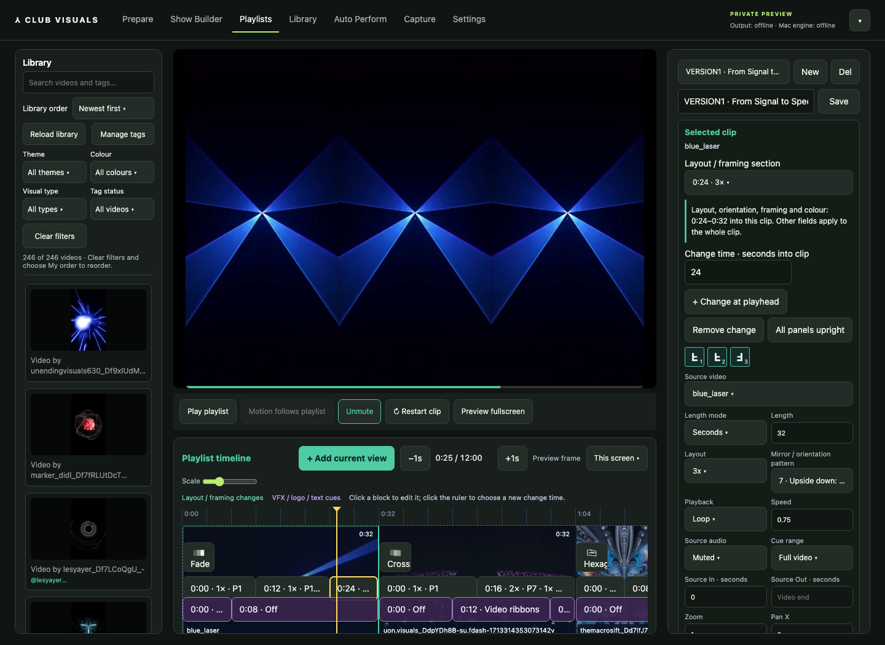
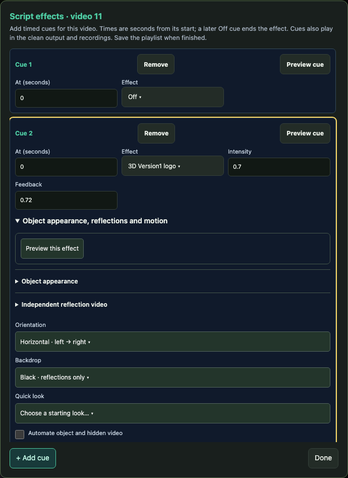
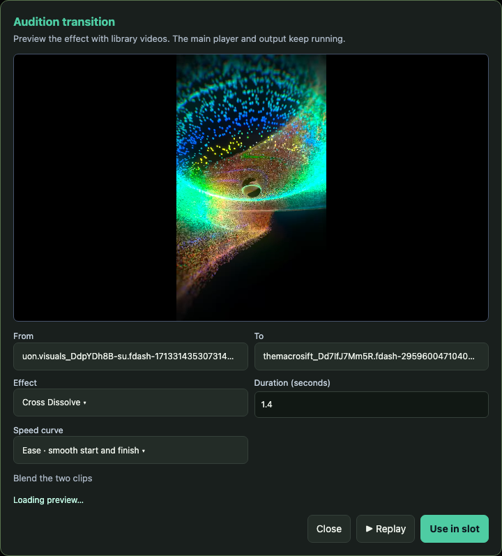

4. Edit and rehearse a playlist
See every scripted change, edit the right section and play the actual composition.
Create, open and save
Choose Playlists. Select a saved playlist, or click New, name it and add videos from the library/add-entry controls. Drag clip bodies to reorder them. A clip can appear several times with different settings. Add current view inserts the prepared source/look near the playhead. Removing a timeline clip removes only that entry. Click Save beside the name to keep your edits.


Read the three parts of a clip
- Thumbnail/body: click to select this clip's own composition directly, paused for editing.
- Transition badge: click to inspect the incoming change from the preceding clip. The first transition can start from black.
- Green and purple rows: select a specific composition section or effect cue, rather than changing the whole clip by accident.
The time ruler sets the full-show playhead. The scale slider changes timeline magnification without changing video zoom. Use the ±1s buttons for small time steps. Horizontal scrolling reveals later clips. The library, preview/timeline and inspector have separate bounded scroll areas.
Play the composition from the playhead
Play playlist below the preview runs the complete authored composition: source video, timed layouts, colour, trails, VFX, reflections and logo motion. It continues through clip boundaries. The playlist panel's Play from playhead uses the same transport. Pause playlist freezes the composed image and keeps the show position; Play resumes there. The playhead follows playback, including during source loops.
In this workspace, Motion follows playlist indicates that the playlist transport owns object motion. Use the cue editor's private audition or Prepare for separate logo-motion rehearsals. Restart clip returns to the selected clip's beginning while retaining whether the playlist was playing or paused. With playlist Loop off, the last composition is held at the end; Play then begins the show again. Preview fullscreen expands this private composition and does not send it to the Mac output.
Edit a timed section

- Click the green block at the change you want to edit. For the opening showcase lasers, choose 0:24.
- Check Layout / framing section and its displayed time span.
- Choose Dual or 4×, or adjust pattern, zoom, pan, colour and trails. The private preview updates.
- Inspect the numbered F diagram. Use All panels upright if you want no mirroring in that section.
- Preview before and after the boundary, then save.
A section's settings apply from its change point until a later change overrides them. Some later changes specify only particular fields, so other settings continue to carry forward. The section selector lists every change even if a timeline block is too narrow to show its whole label. Hover a block for its detailed settings.
Add, move or remove a change
Click the ruler inside a clip, then + Change at playhead. Edit that new section's parameters. Change Change time · seconds into clip to move the event. Times must be unique, greater than zero and before the clip's end. Remove change continues the preceding settings through that point. The initial Start section cannot be removed or moved. These actions do not split or restart the source video.
Know the editing scope
| Selected timed section | Whole clip |
|---|---|
| Layout and mirror/orientation pattern | Source video and total slot length |
| Zoom and Pan X/Y | Once/Loop/Bounce and playback speed |
| Hue, saturation, contrast, brightness, blur, invert and sepia | Source audio mute and virtual In/Out range |
| Trails and trail fade | Incoming transition type, duration and pace |

Changing source video keeps the clip's show timing and scripts but resets its old source range to the full new video. Review those scripts against the new footage. Shrinking a clip can place later authored changes beyond its end; extend the clip again or move/remove those changes as appropriate.
Edit effects and transitions
Click a purple block to open its exact cue. An Off cue ends the active effect. You can change the cue's time, effect, intensity and feedback, and edit all available camera/mirror/object settings. Logo/text cues expose appearance, reflection sources, paths, waypoints, snake and fly-along controls. Preview cue closes the dialog and moves the composition preview to that cue. Done returns to the playlist; save afterwards.


Use a transition badge or Audition transition for transition review. The catalogue offers 61 types. Choose duration, pace and any effect-specific parameters offered in the audition. Use in slot applies that audition's settings. Reduced-flash settings soften supported flashes but do not make all intense imagery suitable for every viewer.

